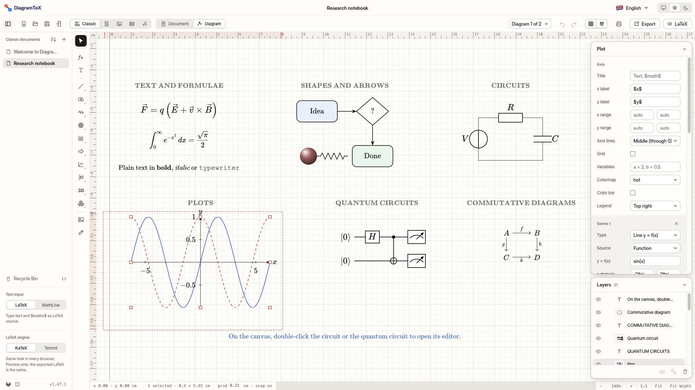
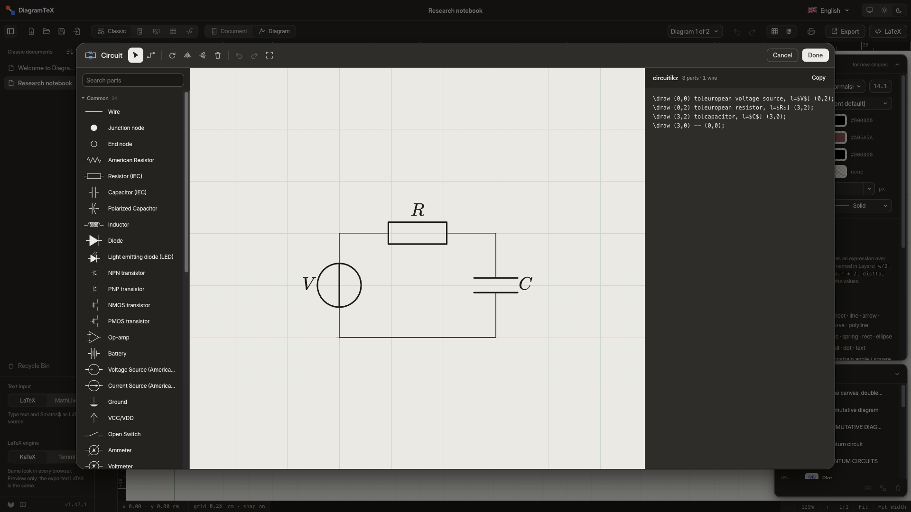

Contents
Draw it, then paste the LaTeX.
DiagramTeX is a diagram editor that writes TikZ. You draw with the mouse, type labels in LaTeX maths, and copy clean code into Overleaf or any LaTeX document. This guide covers everything it does, from the first line to a whole typeset document.
- Free and open source
- Works offline
- No account
- Nothing leaves your browser
Get started
- Pick a tool and draw. The rail on the left holds every tool; press L for a line, R for a rectangle, T for text.
- Type maths in labels. Anything between
$…$is LaTeX maths and renders as you type:$\vec F = m\vec a$. - Copy the TikZ. Press CtrlE to open the code. The comment at the top lists the packages it needs.
- Paste and compile. Put the code in your document, load the listed packages, and build with pdfLaTeX.
The first time you open DiagramTeX it shows a Welcome file: an introduction, two diagrams with one example of almost everything it can draw, and a short manual. Open any of its objects to see how it was made. To keep DiagramTeX on your computer, install it from the browser (the install icon in the address bar, or Add to Home Screen); it then runs without a connection.
The window

Top bar
New, Open, Save and Import on the left; the mode switch; the file name and autosave state; undo and redo; grid and snap; Print, Export, Code and LaTeX on the right.
File list
Your files of the current kind. Right-click a file to rename, duplicate or delete it. The button at the far left folds the list away. Underneath: the text input mode and the maths engine.
Tool rail
Every tool. A button with a small corner triangle opens a flyout of related tools when you hover it.
Properties panel
Floats over the top right of the canvas. With nothing selected it sets the default style for new shapes and lists the shortcuts; click its heading to fold it.
Layers
Under the properties panel, top first. Click to select, drag to restack, the eye hides, the lock stops picking. Double-click a name to rename it.
Rulers and status bar
Centimetre rulers in TikZ coordinates (y up) show the selection in red. The status bar shows the cursor, the selection size, grid, snap and zoom, with 1:1, Fit and Fit Width.
1 cm in TikZ is 40 px on the canvas at 100%. Canvas y points down and TikZ y points up; the faint cross on the canvas marks the TikZ origin. The app follows your system's light or dark appearance, or the choice at the right end of the top bar. The drawing sheet stays light in both, so colours look as they will on paper.
Four modes
The top bar's main switch is Classic | Page | Whiteboard | Quick. Each of the first three is its own kind of file; the sidebar lists only files of the current kind, and New makes one of that kind.
Classic
Diagrams plus a document that arranges them with text, as in Mathcha. A second switch, Document | Diagram, flips between writing and drawing.
Page
A free-form sheet of paper. Place text, maths, shapes, plots and images anywhere on A4 or Letter pages, and export a full article that keeps every position.
Whiteboard
One endless canvas with no edges. Scroll to move, pinch or Ctrl+scroll to zoom (3% to 800%), and H or Space-drag to grab the board.
Quick
One formula as a picture. Type LaTeX, then Copy PNG (CtrlEnter) to paste it into slides or chats, or copy the SVG. Your open file stays open.
Drawing
Tools
- Select (V), Maths (M, a text object that starts in
$…$) and Text (T; drag for a paragraph box). - Lines: line, curve, arrow, curved arrow, polyline, smooth closed blob, arc (an angle mark) and spring. Click a polyline point to pick it, drag a + to add one, double-click to remove one.
- Shapes: rectangles (plain, rounded, snipped), 33 basic shapes and 28 flowchart symbols. Library symbols export as exact TikZ paths and can hold centred text.
- Electrical: the circuit editor, common symbols (resistor, capacitor, sources, diode, transistor, logic gates, ground) and waveforms (sine, square, pulse, triangle, sawtooth, rectified, chopped…).
- Physics: mechanics (ground, wall, block, incline, cart, pulley, pendulum) and optics (lenses, mirrors, prism, screen, slits, rays, source, eye).
- Misc: axes, wave, brace, ruler, grid, ball and dot; Arrows: 27 block arrows; Image (I) and Pencil (N, freehand, smoothed into Bézier curves).
Detailed shapes keep their detail size when you resize them: stretching a wave adds periods, a spring or coil adds loops, a ruler adds ticks. The panel holds the detail sizes (period, loop pitch, tick spacing, cell size).
Snapping and precision
- The grid is 0.25 cm. Shapes snap to it and to other shapes' points; hold Alt to place freely.
- Hold Shift to keep angles to 15° steps and to draw squares and circles.
- Arrow keys nudge the selection. The panel shows every coordinate in TikZ centimetres, ready to type.
- Rotate by hovering just outside a corner of the selection until the cursor turns, then drag (Shift for 15°). CtrlR turns 90°.
Arranging
- Right-click any object for copy (also as TikZ), cut, paste, duplicate, delete, group, and the Combine, Arrange, Rotate, Align and Distribute menus.
- Groups (CtrlG; add Shift to ungroup) select and align as one piece.
- Combine two or more closed shapes: Unite, Intersect, Subtract, Exclude or Divide. The result is a Region, which can have holes, exported with
even odd rule. - Stacking: Ctrl] and Ctrl[ move forward and backward, or drag rows in Layers.
Style
- Colour with presets, alpha and “No colour”. Fill is a colour, a gradient (linear or radial, with draggable stops; exported as pgf shadings) or a pattern (lines, grid, crosshatch, bricks, dots; exported with
patterns.meta). - Lines: width, dash presets or a custom
on offpattern, 27 arrow tips, double, wavy and ticked shafts, opacity. - Text: font family, bold and italic, size from
\tinyto\Hugeor a custom size, and a wrap width with left, centre, right or justified alignment. - With nothing selected, the panel sets the default style that new shapes start with.
Text and maths
$…$is inline maths.$$…$$or\[…\]is display style (full-size fractions and limits), exported as$\displaystyle …$. Math style in the panel switches every formula in the selection at once.- Command suggestions: type
\and matching commands appear with a rendered preview, about 250 common ones first. ↑ ↓ to choose, Enter or Tab to insert, Esc to close. - Text input (left sidebar): LaTeX to type source, or MathLive to edit maths visually. Double-clicking a label edits it in the mode you chose.
- LaTeX engine (left sidebar) changes only the preview: KaTeX looks the same in every browser; Temml covers more LaTeX and looks closer to TeX. The exported code is the same.
- Labels on lines and curves use TikZ's
autoandswapplacement, so they sit where LaTeX puts them.
Maths inside LaTeX source fields is shown in green, so you can see at a glance which part is maths.
Plots and 3D
2D plots (pgfplots)
Click the plot button to place one, or drag out a box. Each plot holds several series, written as expressions such as sin(x)*exp(-x/4) or as data. Kinds: function, line, scatter, area, bar, contour, heatmap, and pie chart (one label value [#color] per line). A function series can also be an inequality (shaded, dashed edge when strict), a region between two curves, x in terms of y, parametric, polar, implicit F(x, y) = 0, points, vectors, a vector field or a phase portrait. Define variables once (a = 2, b = 0.5) and use them in every series. Axis labels, ranges, grid, legend, colour maps and a colour bar are in the panel; expression errors show both there and on the canvas.
2D geometry
The last tool in the 2D plots menu, 2D Geometry, is a plain TikZ figure for vectors and coordinate geometry: drag points, add vectors, projections such as (Q |- P), angle marks and plots, and measures that print their value and update when a point moves. See Blocks.
3D
The 3D menu has eight tools; each one's variants are chosen in its panel.
- 3D plots (pgfplots): surface
z = f(x, y)(or a mesh), parametric surface, space curve and 3D scatter, with pgfplots'view={az}{el}angles. - 3D figures in plain TikZ, for calculus: solid regions over an ellipse, rectangle, polar curve or polar rectangle (with Riemann columns), solids of revolution (disks, washers, shells, cut open, with a highlighted slice) and basic solids (box, cylinder, cone, frustum, sphere, prism, pyramid, spherical wedge). Hidden edges are dashed; lower a colour's alpha to see through.
- 3D Geometry (
tikz-3dplot): a picture you turn by dragging, with points, vectors, projections, planes, surfaces, spheres and angle arcs. See Blocks.
Blocks
A block is a whole figure written in one LaTeX package, edited in its own editor. Add one from the Blocks menu (the cube on the tool rail). Blocks are experimental, so check the compiled figure before you rely on it. Placing a block only selects it; double-click it, press Enter or use the Edit… button in the panel to open its editor.

All editors work the same way:
- Palette on the left: click an item and click the grid, or drag it in. Single keys place the common items.
- Code on the right, live both ways. The code follows the drawing, and typing in it updates the drawing after a short pause. Parts you didn't touch keep the code you wrote, and commands the editor can't draw are kept and exported as written (it tells you which).
- Right-click an item for its actions: insert, delete, reverse, bend, edit label. Double-click a label to edit it in place.
- Done (CtrlEnter) writes the block back and closes; CtrlS writes it back and keeps the editor open. Cancel or Esc asks before discarding changes.
Circuit circuitikz266 parts
- Parts come in searchable categories. Click a part and click the grid, or drag from start to end to set a two-terminal part's length.
- Wires (W) snap to pins and stay attached when parts move. Transistors, op amps and ICs are named for you (
Q1,U1), so wires export as(Q1.B). - The panel sets the label (maths welcome:
$R_1$), annotation, voltage and current arrows, open and closed ends, rotation and mirroring. - Exported as a
scopewith\usepackage{circuitikz}; Copy circuitikz Code gives a standalone environment.

Quantum circuit quantikz
- The circuit is a grid of wires × steps. Keys place gates and step right: H X Y Z S T U, C control, O open control, + target, M meter.
- Drop on the dashed row or column to add a wire or step. Right-click a cell or a range to insert or delete wires and steps, or clear cells.
- Controls link to the nearest gate in their step; drag the blue handle to link another wire. Drag a gate's top or bottom bar to span several wires, or its corner handle to set a minimum size.
- The panel edits labels, spans, wire types (quantum, classical, bundle), slices and gate groups. Exported in
\begin{quantikz}with\usetikzlibrary{quantikz2}.
Commutative diagram tikz-cd
- Select a cell and type its object, or drop one from the palette. Drag from cell to cell to draw an arrow in the palette's style (maps to, inclusion, onto, dashed, implies, equal, harpoon, squiggly…).
- The panel sets an arrow's label and side, head, line, crossing gap, bend and shift; Reverse swaps its ends.
Commutative diagram xymatrix
- The CD editor, writing
\xymatrix{…}for thexypackage: arrows like\ar@{->>}[r]^{f}, curves@/^1pc/, shifts@<.5ex>, spacing@R=,@C=. - Drawn with xy's spacing and arrow tips, and exported as written with
\usepackage[all]{xy}. - Convert to tikz-cd in the panel rewrites the block as a CD block, and Convert to xymatrix on a CD block goes the other way. Converting back before you edit restores your original code; anything the other package can't say is listed in a hint.
Tree forest
- For syntax trees, org charts, directory trees, decision and probability trees. Start from a template, then add, move and restyle nodes by keyboard or by dragging.
- Tree-direction buttons follow the tree's growth; the code is live beside it.
ZX diagram zx-calculus
- Drop Z and X spiders, Hadamard boxes, points and loops onto cells, or type Z X H N L.
- Drag a node's blue handle to another cell to wire them. Click a wire to choose its shape from pictures, add a marker, or make it classical, bold or dashed.
- The panel sets a spider's colour, phase (plain or a fraction) and where the phase goes.
Feynman diagram tikz-feynman
- Place vertices (dot, blob, crossed dot, particle) on a centimetre grid; drag the blue handle from one vertex to another to draw a propagator: fermion, photon, gluon, scalar, ghost, Majorana, boson and more (keys F P G S M B L).
- A line has a label, a momentum arrow, a bend or half circle and an insertion; right-click to reverse it.
- Exported with
\usepackage[compat=1.1.0]{tikz-feynman}and builds with pdfLaTeX, because every vertex has a position.
2D geometry TikZ
- The 3D geometry editor seen straight on: drag across empty space to select (left to right takes what lies wholly inside, right to left anything the box touches; Shift adds), hold Space and drag or use the arrow keys to move the view, drag a point to move it (Alt places it off the 0.05 grid). A point at (angle:radius) keeps that form.
- Drag a circle by its rim or its centre to move it. Hovering the rim shows a small square at its top right: drag that to change the radius (Alt sizes it freely). A number, a length in cm or mm, or the value the radius names is rewritten; a radius worked out in the code has no square.
- Drag a line, an edge or the inside of a shape to move the whole object: a polygon, a segment, a vector (a circle moves by its rim, not its inside). Every point it uses moves by the same step (snapped to 0.05; Alt moves it freely), so a named point such as
(P)moves where it is defined and anything else built on it follows. A path through computed points (a projection, a calc expression, a loop or a plot) and the grid stay put. - Hold Shift while dragging a point to snap it to whichever is nearer: a whole-number point, or (for the end of a line) a multiple of 15° from the point it joins. Alt with Shift keeps only the angle.
- Press CtrlA to select everything. Drag any of it to move it all together, the grid included; ⌫ deletes it all and Esc or a click on empty space clears the selection.
- Add axes, a grid, points by (x, y) or (r, θ), labels, segments, vectors, projections, polygons, circles, angle and right-angle marks (pick one, then click inside a corner where two lines meet; select a mark to drag its square to size it and its label in or out), and plots y = f(x), polar and parametric (keys A G P T S V C M F).
- ⌘C / ⌘X copy or cut the selected commands as TikZ, and ⌘V pastes them, offset a little, with clashing point names renamed.
- Measures (Δx, Δy, length, angle): select a segment between two points, then pick one. The value is computed in the code and printed with
\pgfmathprintnumber, so it follows the points. - The panel gives each value set to a number a slider. Exported as written, with the
anglesandquoteslibraries when it uses angle marks.
3D geometry tikz-3dplot
- Drag empty space to turn the view; arrow keys turn it by 5° (Shift 15°). Drag a point to move it level; hold Shift to move it up and down.
- Add axes, rotated frames, points by (x, y, z) or (r, θ, φ), vectors, segments, projections, planes ax + by + cz = d, surfaces, triangles, circles, spheres, boxes, curves and angle arcs (keys A R P T V S L C B).
- The code is the figure:
\foreachloops,\defvalues and scopes are read and drawn. Moving a point defined by\defvalues writes the new values there.
Timing diagram tikz-timing
- Pick a value (High, Low, High-Z, Unknown, Data, Clock, Toggle, Metastable, Glitch, Gap, Hatched; keys H L Z X D U C T M G S W) and drag along a row to paint it.
- Drag an edge to move a transition; with Shift the rest of the row moves too. Data cells can be filled in a colour or hatched.
- Interval and Delay draw labelled arrows between edges (setup, hold, clock-to-output); Break (B) puts
//marks across every row. - Text you type is escaped so it can't break the table; write
$x_1$for a subscript.
State machine TikZ automata
- Place states (State, Initial, Final, Both); drag a state's blue handle to another state for a transition, or back onto itself for a loop. I, A and L toggle initial, accepting and add a loop.
- Auto layout places every state in layers or on a circle, bending transitions just enough to clear other states.
Karnaugh map karnaugh-map2 to 6 variables
- Click a cell to step it through 0, 1 and don't care, or paint with 1 0 D E. Rows and columns are in Gray code.
- Drag across cells to group them; past an edge, a group wraps round. The panel checks each group, writes out the simplified function, and Find Groups finds a smallest cover.
Bit field bytefieldpacket and register layouts
- Starts from an IPv4-style header. The palette adds a Bit box (B), Word box (W), single Bits (I), Skipped words (K) and a bit Header (H).
- Drag a field's right edge to move the line between it and the next (it snaps to bits); drag a word box's bottom to change its height. S splits a field, M and ShiftM merge it with the next or previous one, and double-click or Enter edits its label.
- Selecting rows: drag across them, Shift-click a second row, or CtrlA for every row. Then R or L puts a labelled brace round them, and Delete removes them in one undo step. Drag a brace's end handle to change which rows it covers.
- The panel sets a field's borders, fill colour (
bgcolor) and formatting, and the whole field's width, bit size and endianness. The canvas follows the package's own measurements, and code you didn't touch is kept as written.
Chemistry chemfig
- Pick an atom and drag its blue handle to grow a bond (snaps to 15°). Type C H N O… to relabel it, or double-click to type any label such as
NH_2. Double-click a bond to step it single, double, triple. - The palette adds rings (benzene, aromatic, 3 to 7 sides, fused onto a picked side), groups (OH, COOH, NO₂…), charges and lone pairs.
- Reactions: an arrow turns the drawing into a
\schemestart … \schemestopscheme with a copy of the molecule to change into the product. - Drawn by chemfig's own rules, so the canvas matches the PDF.
- Pasted code can use submolecules (
\definesubmol, with arguments),\setchemfig, curved electron-pushing arrows (@{name}and\chemmove) and\hreac … \endhreac: all are drawn. Atoms that come from a submolecule are changed in its\definesubmolline.
Bloch sphere blochsphere
- Set the radius, tilt and rotation, the ball style (shaded, outline, none) and colours in the panel, and list states by their label, θ and φ.
- The code below is editable too; commands the panel doesn't cover are kept.
Documents and pages

Classic documents
- A Classic file is a document of text blocks and diagram blocks. Text blocks take
# Heading,$inline$and$$display$$maths,\textbf{}and\emph{}. - Double-click a diagram block, or press Edit, to draw it on the canvas. In Diagram view, the selector in the top bar picks between diagrams.
- Page setup (right panel): paper (A4, A5, B5, US Letter, US Legal or custom), orientation, margins, font size and title. The preview marks approximate page breaks.
- Diagrams wider than the text are scaled down to fit, on screen and in the export (
\resizebox{\linewidth}{!}{…}).
Page mode
- Place anything anywhere on the paper. Margins are blue dashed guides; corners, margins and centre lines are snap points.
- Several pages stack down the canvas. With nothing selected, the panel lists every page to reorder, duplicate, insert or delete; an object belongs to the page under its centre and moves with it. PgUp / PgDn move between pages.
- The LaTeX export writes one
tikzpicture[remember picture, overlay]per page, anchored to the page corner, so positions are exact. Compile twice.
Getting LaTeX out
| Command | What you get |
|---|---|
| LaTeX CtrlE | The code dialog, to copy or download. Pick a tikzpicture snippet or a standalone document, for everything or only the selection (the header comment lists the packages and libraries to load), or the whole document. |
| Whole document CtrlShiftE | Downloads the whole document at once as an article with geometry page settings and each diagram in a tikzpicture. Each picture carries a % diagramtex-data: comment, so it re-imports exactly. |
| Export | PNG at any DPI from 24 to 2400 (written into the file, so it opens at true size, optionally transparent), SVG (vector, maths fonts embedded) or PDF (pictures at the chosen DPI). |
| Print CtrlP | Pages at true size; choose Save as PDF for a vector PDF. |
| Right-click → Copy TikZ | Just the selected objects' code, straight to the clipboard. |
Save to (Chrome, Edge and other Chromium browsers): choose a folder for a file's exports once, such as your paper's figures/ folder, and every later export overwrites its copy there.
A typical snippet looks like this:
% Requires: \usepackage{tikz} \usetikzlibrary{arrows.meta}
\begin{tikzpicture}[x=1cm, y=1cm]
\draw[line width=0.71pt, -{Stealth}] (0,0) -- (3,0) node[midway, above] {$\vec v$};
\draw[line width=0.71pt] (4,0) circle (0.5);
\end{tikzpicture}Packages by block: TikZ always; circuitikz, pgfplots, tikz-cd, xy, the quantikz2 library, forest, zx-calculus, tikz-feynman, tikz-3dplot, tikz-timing, the automata library, karnaugh-map, bytefield, chemfig and blochsphere as used. All of them are in TeX Live and on Overleaf.
quantikz2 restyles every tikz-cd diagram in the same document. When a quantum circuit shares a figure with a commutative or ZX diagram, the export adds a few preamble lines that keep those diagrams as they look on their own.
Bringing TikZ in
Import LaTeX/TikZ (top bar) takes pasted code or a .tex file and turns it into objects you can edit.
- Commands:
\draw,\fill,\filldraw,\node,\coordinate. - Paths:
--,..controls..,|-,rectangle,circle,ellipse,arc,to[bend],gridand inline nodes. - Options: colours (including
red!50), widths, dashes, arrows,scale, polar and relative coordinates;rotate,shift,xshift,yshifton paths, nodes and nested scopes. ZX,feynman,tikztimingtableandbytefieldenvironments come back as blocks you can edit. Document text becomes text blocks, and\documentclassandgeometryoptions become the page setup.- The switch in the dialog's head chooses what TikZ that can't be read exactly becomes. As Written keeps it as code, exported unchanged and drawn in a dashed frame. Editable Shapes turns it into ordinary shapes you can edit, exported from the shapes, so some details may change.
- Insert into Diagram adds each picture as one group in the middle of the canvas, or, in the Document view, as a new diagram after the active one (⌘V there does the same); Import as New Document opens it in a new file.
- Hand-written
axisandtikzcdenvironments are skipped, with a warning. Files DiagramTeX exported re-import exactly, plots included.
Files and saving
- Autosave: every change is saved in your browser (IndexedDB) as you work. Nothing is uploaded.
- Save (CtrlShiftS) writes a
.diagramtexfile (JSON inside); Open (CtrlO) loads it back in the right mode. - Export All Files… (right-click the empty part of the file list) saves every Pages, Classic and Whiteboard file into one
.diagramtexbundle. Opening the bundle puts each file back in its own kind, skips ones already here unchanged, and adds “copy” to names that are taken. - Linked files (Chromium browsers): after the first Save, the file stays linked, so CtrlS writes straight to it. An amber dot by the name means unsaved changes. Safari and Firefox download a copy each time instead.
- The installed app can open
.diagramtex,.texand.tikzfiles from Finder or Explorer (Open With).
Browser storage can be cleared by the browser or by you. Keep a .diagramtex copy of anything you care about.
How close to LaTeX
The canvas is drawn with each package's own geometry, so what you see is what pdflatex makes: across the test figures, 99.5 % of the ink lands within half a millimetre. The main differences you may notice:
- Fonts: the preview uses KaTeX or Temml, which are close to Computer Modern but not identical; line breaks in wrapped text can fall slightly differently.
- Fill patterns: LaTeX lines up stripes and dots with the page corner, so they can be shifted inside a shape.
- Small offsets: a circuit's curved voltage arrow on parts other than resistors and capacitors, op-amp signs, and 3D plot axis labels at unusual view angles can be up to about 1 mm off.
- Code the editor keeps but doesn't draw (an unusual option, a chemfig
\subscheme) appears only in the PDF. Each editor lists such lines.
The full report, with side-by-side images and a match rate for every kind of figure, is PARITY.md.
Keyboard shortcuts
| Keys | Action |
|---|---|
| V L A C P | Select, line, arrow, curve, polyline |
| O S R E | Arc, spring, rectangle, ellipse |
| B D T M | Ball, dot, text, maths |
| I N H | Image, pencil, hand (Whiteboard and Page) |
| Shift | Constrain angle to 15°, square, circle |
| Alt | Drag without snapping |
| Space+drag | Pan (or the middle mouse button) |
| Ctrl+scroll | Zoom |
| CtrlZ / CtrlShiftZ | Undo, redo |
| CtrlD | Duplicate |
| CtrlG | Group (add Shift to ungroup) |
| CtrlR | Rotate 90° |
| Ctrl] / [ | Bring forward, send backward |
| Enter | Open the selected block's editor |
| CtrlEnter | Done (in an editor); Copy PNG (in Quick) |
| CtrlS | Save (in an editor: write back and stay open) |
| CtrlShiftS | Save as a file |
| CtrlO | Open a file |
| CtrlE | TikZ code |
| CtrlShiftE | Export the whole document as LaTeX |
| CtrlP | Print or PDF |
| Right-click | Object menu |
Offline and privacy
- Your work never leaves your device. Files and settings live in your browser; there is no server-side storage.
- No account, no tracking: no sign-up, analytics, cookies, ads or third-party scripts.
- Offline: after the first visit, the app, both maths engines, MathLive and every font are stored by the browser, so everything works without a connection.
- Updates: when a newer release is on the same site, an amber dot appears before the version number at the bottom of the file list; click it to reload into it. The app checks once per load and asks no other site.
- No requests to other sites, even from your exports: SVG, HTML, PNG and PDF exports embed the maths fonts instead of linking them.
- Open source under the MIT License; you can host it yourself as plain static files.
Use of generative AI
DiagramTeX was built with the help of generative AI: much of its code, tests and documentation were written with AI coding assistants, directed, reviewed and tested by the author. The app itself uses no AI: nothing you draw is sent to an AI service or anywhere else.
Questions
Can I use the output in Overleaf?
Yes. Press CtrlE, copy the code and paste it into your project; load the packages listed in the comment at the top.
Does it work on phones and tablets?
Tablets, yes, and a phone turned sideways. A phone held upright asks you to continue on a bigger screen: the editor needs the room.
How large can a drawing get?
Tens of thousands of objects. Only what is near the view is drawn, so editing stays smooth at 20,000 objects.
Where are my diagrams stored?
In your browser's IndexedDB. Use Save to keep a .diagramtex copy as a file.
Something the editor can't draw?
Type it in the editor's code. It is kept and exported as written, and the editor tells you which lines it couldn't draw.